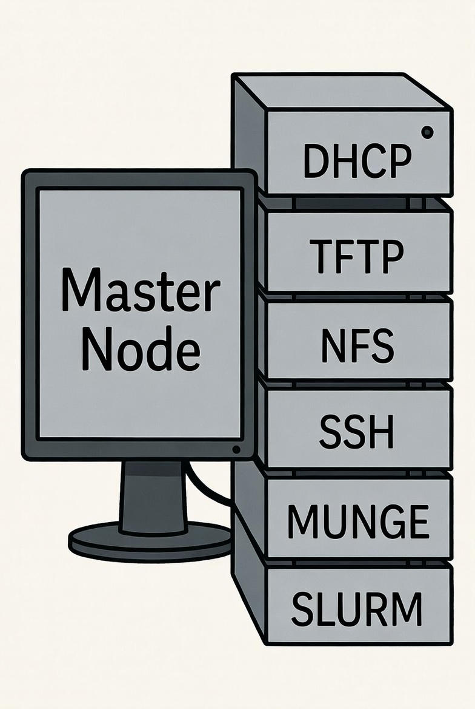

Building a Full Diskless Linux Cluster
Part 1: How a Diskless Cluster Works
A diskless cluster consists of two types of machines: a Master Node and multiple Compute Nodes. Compute nodes have no storage devices. They rely entirely on the master node to boot, authenticate, and operate.

The master node is not a single-purpose machine. It acts as a combined server providing DHCP, TFTP, NFS, SSH, MUNGE, and SLURM.
When a compute node powers on with PXE boot set as the first boot option, it broadcasts
a DHCP request. The master node responds by assigning an IP address and pointing the node to
the bootloader file pxelinux.0.
The compute node then downloads pxelinux.0 via TFTP. Based on its configuration, the node fetches the Linux kernel and the initial RAM filesystem (initramfs) from the master node, again using TFTP.
After the kernel starts, the compute node mounts its root filesystem over NFS from the master node. At this point, the node is running a full Linux system without any local disk.
Once booted, compute nodes are fully usable. Users can run software, compile code, and execute parallel jobs exactly like a normal Linux system.
For cluster computation, SLURM is used as the workload manager. Password-based SSH logins are inefficient, so MUNGE is deployed to provide secure, credential-free authentication between nodes. With SLURM and MUNGE running on all nodes, the cluster becomes a functional HPC system.
Part 2: Diskless Cluster Setup Roadmap
In this section, each service is configured step by step. Detailed commands are not repeated here; instead, each setup links to its dedicated guide.
- Configure the DHCP server on the master node.
-
Configure the TFTP server to serve
pxelinux.0, the Linux kernel, and the initramfs. - Build the root filesystem for compute nodes, including networking, SSH, MUNGE, and SLURM client components. Here you will get the initramfs for step 2 too.
- Configure the NFS server and export the root filesystem to compute nodes.
- Set up MUNGE on the master and all compute nodes for secure authentication.
- Configure SLURM on the master node and register all compute nodes for job scheduling.
Additional Help
- DNSMasq setup – lightweight DHCP/DNS/TFTP alternative for small clusters.
- PXE boot with Arch Linux – PXE configuration and bootloader setup.
- Arch Linux PXE root filesystem – building and exporting the NFS rootfs.